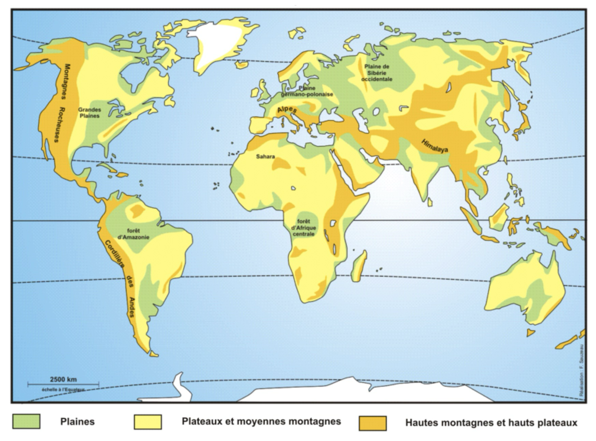

Mes outils
Ouvrez rapidement l'outil dont vous avez besoin.
Mes raccourcis
Ajoutez vos sites et ressources habituels.
Sauvegarde
Conservez vos données pour les retrouver sur un autre navigateur.
Seance
Minuteur
Travail
10:00
100% restant
Pret pour une session de travail.
Localiser
Cartes

Fond de carte mondial pour reperes physiques, oceans et grands ensembles.
Explorer
OpenStreetMap
Travailler ensemble
Groupes
?
Ajoutez des élèves puis lancez la roue.
0 nom dans la roue.
J'ai besoin d'aide
Conseils
Avant de demander de l'aide :
Je peux aider
Conseils
Pour bien aider :
Comprendre la consigne
Consignes
Source : À partir du programme de cycle 3, 2026 | Eduscol · Affiches : La Classe d'Histoire
Corriger sa production écrite
Relecture
Se repérer
Frises chronologiques
Préhistoire
Antiquité
Moyen Âge
Temps modernes
Époque contemporaine
Échelle relative : afin de préserver la lisibilité, les écarts entre les repères peuvent être simplifiés et ne correspondent pas toujours strictement aux durées réelles. Source des images : Wikimedia Commons.